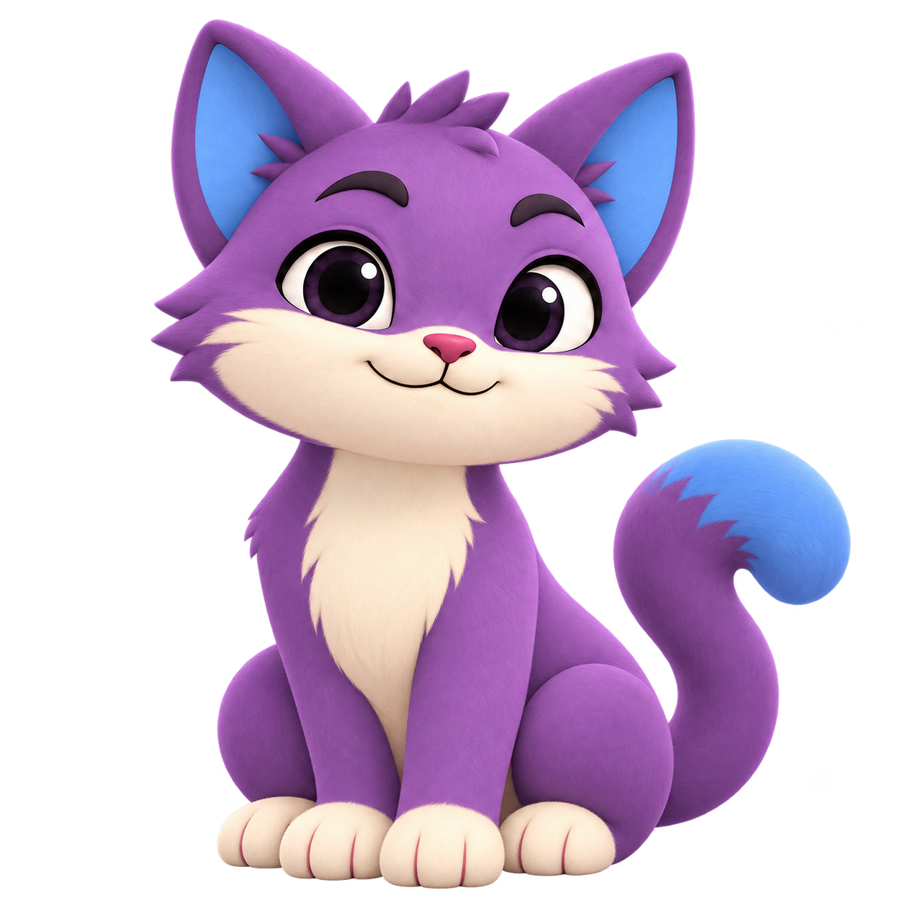

Vorige bewegingsproef
Deze versie is afgewezen. Bekijk de nieuwe knipperende houdingen →
Alle 24 goedgekeurde houdingen, elk met een rustige beweging. De afbeelding blijft dezelfde: geen wisselende gezichten of snelle beeldreeksen.
Bewegingen ter beoordeling · de illustraties zijn goedgekeurd.

Gewoon even zitten
Rustig ademen
De bewegingen worden geladen.
Dezelfde goedgekeurde afbeelding.
Bekijk het origineel ↗

Kies uit alle 24
Elke houding heeft eigen timing. Alleen de grote preview beweegt.
Wat kan deze methode wel en niet?
Dit zijn kleine bewegingen van de hele houding: een ademindruk, een leun of een licht opveren. Ogen, poten en staart bewegen niet afzonderlijk. Daarvoor moeten we aparte lagen en verbindingen voorbereiden.
Geen nieuwe AI-beelden, vervormde gezichten of 3D. Je kunt elke beweging stilzetten. Bij minder-bewegen in je systeem blijft Nexai stil. Beweging stopt ook buiten beeld of als je dit tabblad verlaat.